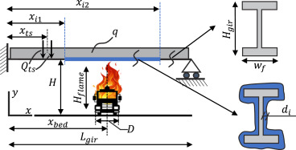
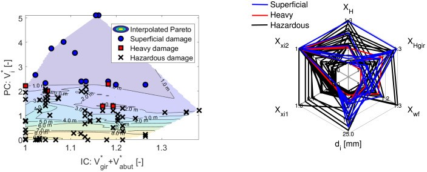

Adaptive Fire Testing: A new foundation stone for fire safety
The current fire safety paradigm is based on a set of standardized tests which have been developed as part of a prescriptive design framework, and do not provide in-depth understanding of construction products’ fire performance. The resulting incomplete fire performance characterization hampers the much needed innovation in the built environment. The current fire safety paradigm also places tremendous emphasis on the expertise of controlling bodies (AHJ), making them responsible both for the specification of detailed prescriptive rules, and for the acceptance of performance based designs. This is unsustainable in the face of innovation. AFireTest strives to induce a paradigm shift in fire safety science and engineering (FSSE). The core of AFireTest is the development of Adaptive Fire Testing whereby optimum fire tests are determined from the infinite number of possible test specifications through the maximum expected net information gain (Value of Information, VoI). AFireTest is a research project funded by the European Research Council (ERC). The principal investigator is Prof Ruben Van Coile I work on the work packages 1 and 3 (WP1, WP3). My role includes: i) Assessing the value of information of fire tests for different applications (e.g. product characterisation, performance-based design) ii) Developing a framework for Adaptive Fire Testing.
Feb 2022-Now
Read more about the AFire Test project Listen to a podcast about the AFire Test projectProbabilisitc performance-based fire design
Example application:
 Risk-based design and assessment methods are gaining popularity in performance-based structural fire engineering. These methods follow conventional structural engineering workflows, which commence by defining a set of hazard scenarios. Next, they involve structural response analysis to estimate hazard consequences in terms of damage or loss metrics of interest. These metrics are eventually appraised to verify whether the performance objectives are achieved or design iterations are needed. However, this workflow may not optimal for fire safety design. Indeed, the strong coupling between the fire phenomenon and structural features enables an ad-hoc design variable selection (and optimizasion) to reduce fire intensity, making fire scenarios additional design outputs. But how to calculate and optimise fire scenarios? In this project, we embraced these ideas by proposing the consequence-oriented fire intensity optimisation (CFO) approach. Next, we further developed the CFO approach to minimise maximum fire consequence and optimise the trade-off between: i) implementing passive fire protection measures; and ii) enhancing a structure’s “inherent fire capacity,” defined as its ability to retain integrity/functionality without fire protection. We demonstrated the appraoch for bridges. Now, we are extending it to buildings and investigating how the CFO and the risk-based design approaches can be combined towards optimal decision making.
Feb 2022-Now
Read more about the CFO approach Compare the CFO approach with conventional risk-based methods Optimise the inherent fire capacity of structuresProbabilistic performance-based assessment of human-induced floor vibration
The vibration serviceability of office floors is an increasingly critical factor in modern building design, yet current codes and guidelines are outdated and lack responsiveness to advances in the field. This often results in discomfort for occupants and potential declines in task performance. Vertical floor vibrations vary due to the random nature of the excitation force (e.g., human walking) and the subjective way humans perceive vibrations. Therefore, a probabilistic approach is needed for a more accurate assessment of floor vibration serviceability. This project explores how vibration comfort experiments, conducted with the VSimulator facility at the University of Exeter, can inform a performance-based framework to enhance floor vibration assessments. Collaborators: Dr Alessandro Margnelli and Dr Iason Pelekis from AKT II; Prof Carmine Galasso from University College London; Prof Aleksandar Pavic and Dr Ahmed Mohammed from the University of Exeter and Full Scale Dynamics LTD (); Prof Ian Walker from Swansea University.
Feb 2023-Now
Sustainable and multiobjective optimisation of cable-stayed bridges
Seismic risk and sustainability goals are often at trade-off when performing structural optimisation of cable-stayed bridges. In this project, we are developing probabilistic apporaches to tackle this issue. For example, this paper describes a three-phase methodology to minimise the expected annual loss and the embodied carbon of newly designed bridges. Various uncertainty sources related to earthquake-induced demands and structural/nonstructural capacities require using computationally expensive non-linear analysis procedures and probabilistic approaches to quantify seismic performance. Therefore, parameterised fragility models conditioned on both ground-motion intensity measures and bridge design variables and derived through surrogate modelling are implemented to enhance the computational efficiency of the proposed method.
Nov 2021-Now
Sustainable and multiobjective optimisation of cable-stayed bridges
Seismic risk and sustainability goals are often at trade-off when performing structural optimisation of cable-stayed bridges. In this project, we are developing probabilistic apporaches to tackle this issue. For example, this paper describes a three-phase methodology to minimise the expected annual loss and the embodied carbon of newly designed bridges. Various uncertainty sources related to earthquake-induced demands and structural/nonstructural capacities require using computationally expensive non-linear analysis procedures and probabilistic approaches to quantify seismic performance. Therefore, parameterised fragility models conditioned on both ground-motion intensity measures and bridge design variables and derived through surrogate modelling are implemented to enhance the computational efficiency of the proposed method.
Nov 2021-Now
Seismic optimisation of cable-stayed bridges
The lack of computationally efficient, probabilistic performance-based design strategies for cable-stayed bridges hinders their optimal design in seismic regions. Thus, in this project, we proposed the implementation of parameterised fragility functions for the surrogate-based sensitivity analysis and performance-based optimisation of these structures. In particular, these functions were exploited to define computationally efficient decision variables and four optimisation strategies that aim to optimise the probability of seismic damage and the direct losses related to the seismic repair cost.
Feb 2020-Feb 2021
Read the Paper